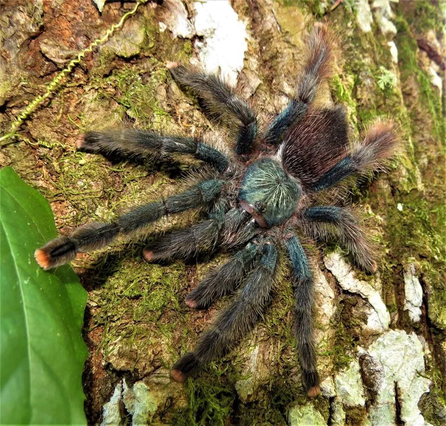

蛛形动物 · 动物界
粉趾捕鸟蛛 Avicularia avicularia

原产南美洲北部的树栖捕鸟蛛，足尖呈粉红色，性情温顺，善于在树枝间跳跃攀爬，是异宠市场上的常见种类。
- 分类
- 门节肢动物门纲蛛形纲目蜘蛛目科捕鸟蛛科属粉趾捕鸟蛛属
- 栖息环境
- 热带雨林的中上层，在树洞、叶丛和建筑缝隙中筑巢
- 地理分布
- 南美洲北部，包括圭亚那、苏里南、委内瑞拉和巴西北部
- 保护级别
- IUCN 暂无评估；非中国原产，在中国无保护级别
物种志
粉趾捕鸟蛛成年足展 11–13 cm，身体覆盖细密绒毛，体色深褐至黑色，足尖和触肢末端呈粉红色，因而得名；腹部有红色或橙色斑纹，足较长，适合在树枝间攀爬。
它原产于南美洲北部，包括圭亚那、苏里南、委内瑞拉和巴西北部，栖息于热带雨林的中上层，常在树洞、叶丛和人类建筑的缝隙中结网筑巢，夜间捕食昆虫和小型无脊椎动物。粉趾捕鸟蛛性情温顺、行动敏捷，受惊时可能快速跳跃或弹射蛰毛，蛰毛接触皮肤会引起瘙痒。雌蛛寿命可达 12 年以上，雄蛛成熟后仅能再活 1–2 年。它会在巢口织一层薄网。它是异宠贸易中的常见种类，野外种群受栖息地破坏和捕捉影响；目前 IUCN 暂无评估。
形态与习性
- 食性昆虫和小型无脊椎动物
- 足展11–13 cm
- 识别足尖和触肢末端呈粉红色
- 寿命雌蛛可达 12 年以上，雄蛛成熟后 1–2 年
- 习性树栖，夜间活动，善跳跃攀爬
- 防御受惊时弹射蛰毛，接触皮肤会瘙痒
趣味知识
- 粉趾捕鸟蛛的足尖像涂了粉色指甲油，名字由此而来。
- 它是树栖捕鸟蛛，喜欢在树枝和叶丛间攀爬跳跃。
- 粉趾捕鸟蛛性情温顺，但受惊时会弹射蛰毛，接触皮肤会发痒。